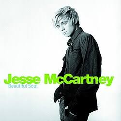

probably the song I'd think of when I think of u!! the song and
lyrics feels emotional but also comforting in a sense since the
whole theme of the song is all about embracing uncertainty!! I
hope things can work out the way you want it to be this time, even
if its different from what you expected. Also I hope that you'll
love youself more this time (WAG K MUNA MAGJOWA TEH) so that u can
bounce back better and stronger :D!! Carlos, I hope u never let ur
insecurities define u. u are more than that and I hope u could
see past through that too!

Beautiful Soul
I don't think need pa 'to ng explanation sa totoo lang . HAHAHA
but I remember listening to this earlier and then you just
suddenly popped in my mind! maybe it was my subconscious reminding
me how good of a person you are! I like how understanding and
caring you are to the people that you love, you say na you have
short-term memory about irrelevant things but I always find little
bits of details in your stories that would contradict that
statement. Love is also remembering things about them after all,
and you exemplify that quality without even realizing it. I think
you really have a beautiful soul, and it's something na I wish
people would notice more about you ^_^
Make It Shine
main character theme song ko talaga 'to this tired year! i'm not
sure why but I wanna associate this w/ u too kasi new year, new
season mo rin right neow!! kidding aside, i just find the lyrics
comforting kasi it feels like one of those songs na everything
will be okay and te I hope it really does for u! I hope na things
would be smooth-sailing for you and I hope na you could bounce
back from your problems din! don't forget ikaw ang main
protagonist ngayon at i-outshine m silang lahat!!!